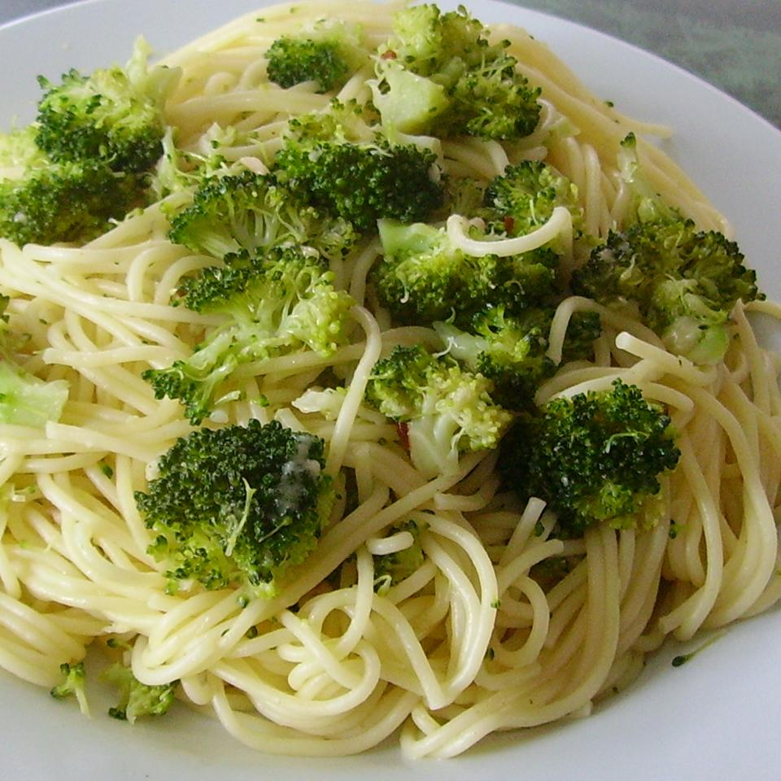

Broccoli Garlic Angel Hair Pasta

Description
If you've got to eat your broccoli, this is a great way to do it. A beautiful side dish of broccoli and angel
hair pasta with red pepper flakes is so delicious and so aromatic.
Ingredients
- 1 1/2 pounds broccoli
- 2 tablespoons olive oil
- 1/4 cup butter
- 6 cloves garlic, minced
- 1 teaspoon red pepper flakes
- 3 cups chicken stock
- salt to taste
- 1 pound angel hair pasta
- 1/2 cup freshly shredded Parmigiano-Reggiano cheese, plus a little more for garnish
- 1 pinch red pepper flakes for garnish, or to taste
Steps
- Hold a sharp knife at a 45-degree angle and cut the florets from the broccoli stems into a bowl. Chop
remaining stems into small pieces and transfer stems to a separate bowl.
- Heat 2 tablespoons olive oil with butter in a skillet over medium heat and cook garlic in the hot oil-butter
mixture, stirring often, until garlic is soft but not browned. Sprinkle in 1 teaspoon red pepper flakes and
salt. Pour chicken stock into skillet and bring to a simmer. Stir broccoli stems into the stock mixture and
simmer until tender, 10 to 12 minutes. Add a little water or stock if mixture starts to dry out.
- Stir broccoli florets into skillet and cook broccoli sauce until florets are bright green and slightly
tender, 3 to 4 minutes.
- Bring a large pot of salted water to a boil and stir in angel hair pasta. Cook, stirring occasionally, until
pasta strands are almost tender, about 4 minutes. Drain and transfer to a large pot.
- Pour broccoli sauce over pasta, stir with a wooden spoon, and mix in 1/2 cup Parmigiano-Reggiano cheese.
Cover pot with a lid and let stand until pasta absorbs excess liquid and finishes cooking, about 2 minutes.
- Serve in bowls and sprinkle each serving with a dusting of Parmigiano-Reggiano cheese and a pinch of red
pepper flakes.